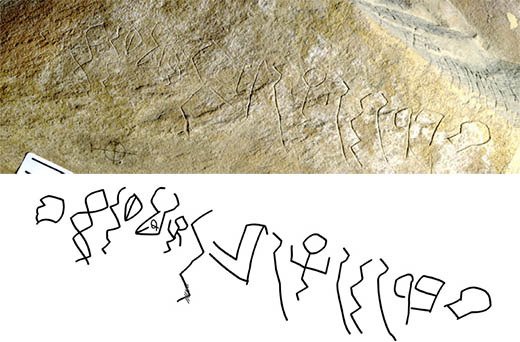

Soratra Proto-Sinaïtika 1

Soratra Proto-Sinaïtika 2

Soratra Proto-Sinaïtika 3

Soratra Proto-Sinaïtika 4

Soratra Proto-Sinaïtika 5

Soratra Proto-Sinaïtika 6

Famantarana Proto-Sinaïtika 1

Famantarana Proto-Sinaïtika 2